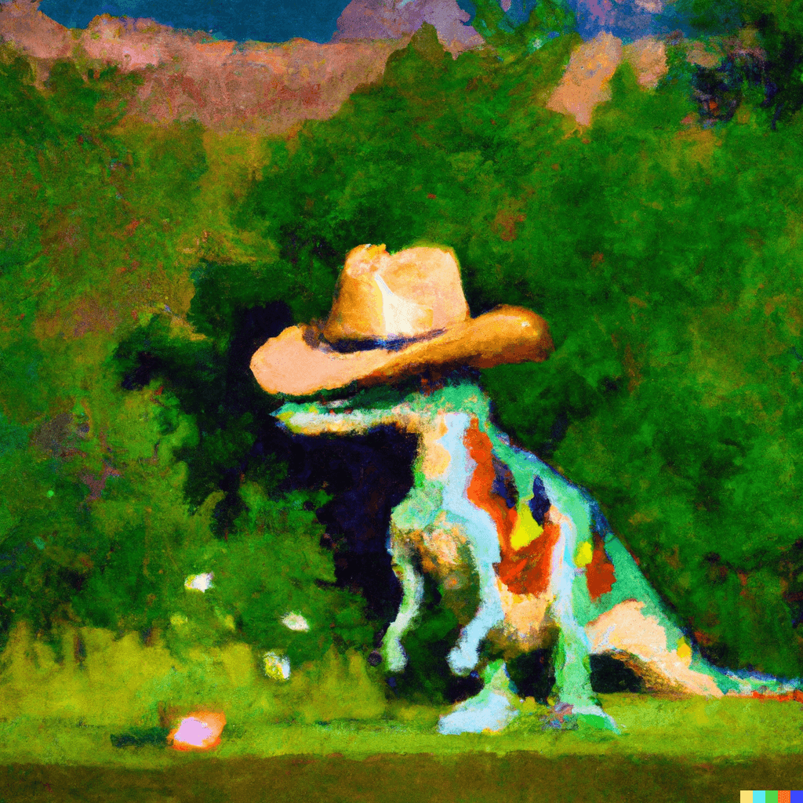
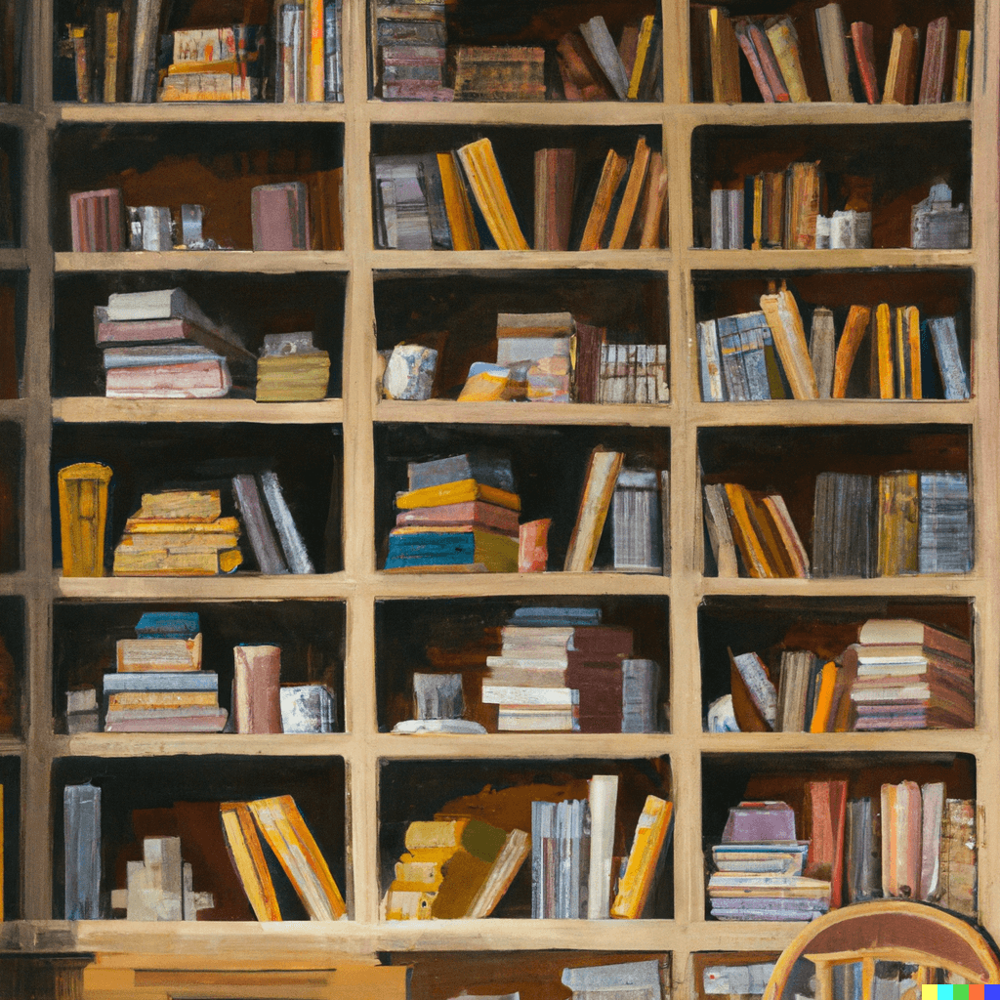
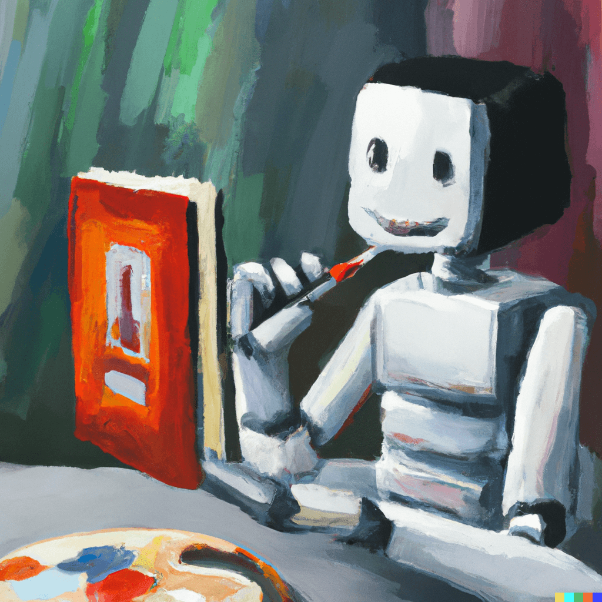
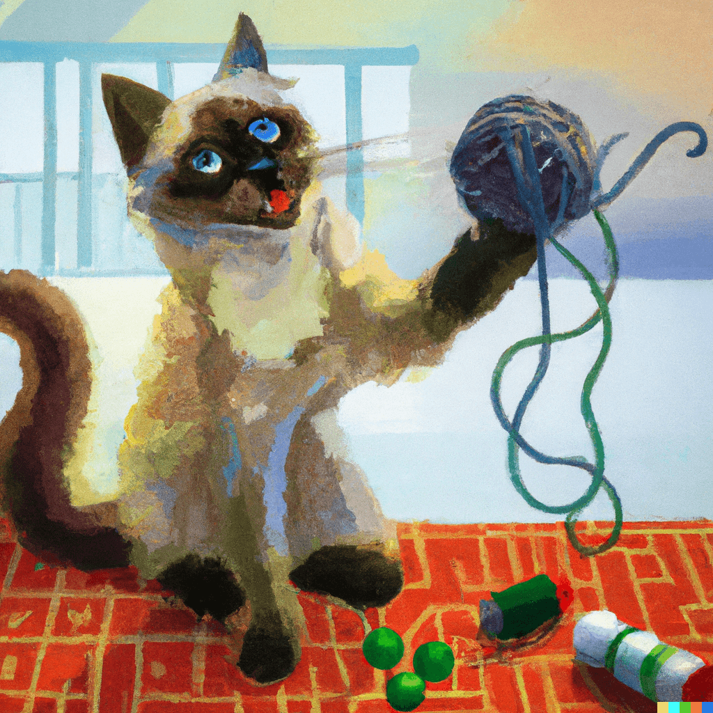
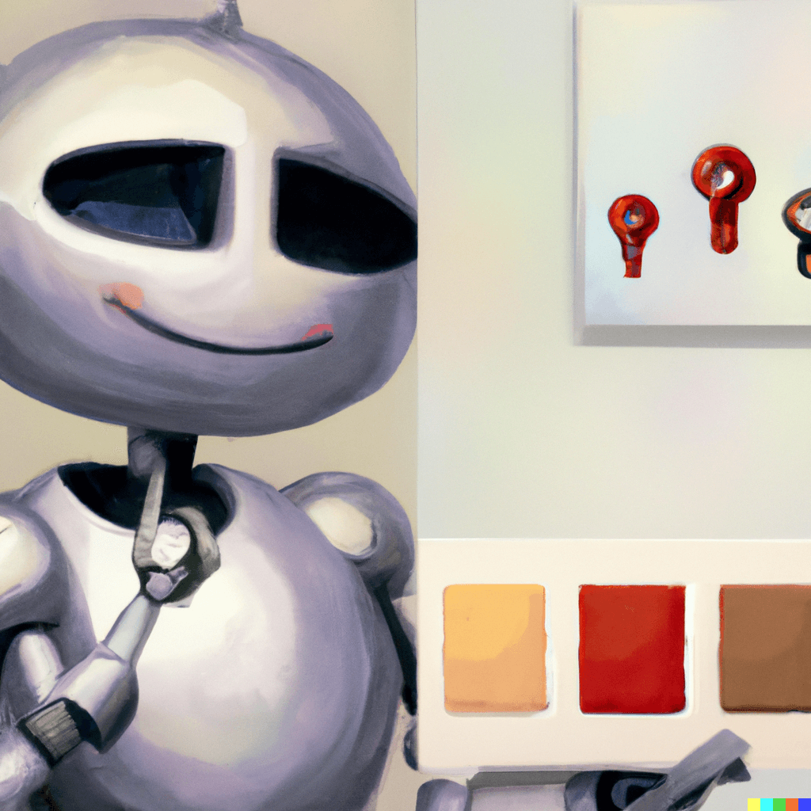
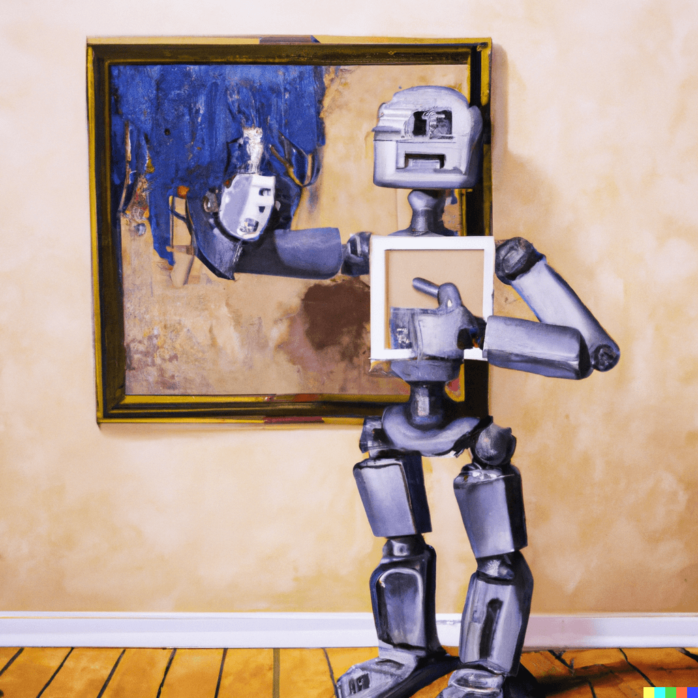

¿Cómo funcionan las Inteligencias Artificiales de “Texto a Imagen”?
Hace un tiempo creé esta imagen usando una plataforma de Inteligencia Artificial (IA) llamada DALL-E 2.
Lo único que tuve que hacer fue escribir el texto:
“Una pintura impresionista
de un dinosaurio usando un sombrero vaquero”
...y dar click en “Generar”.
Existen varias herramientas de este tipo, entre ellas destacan Midjourney,
DALL-E 2 y Stable Diffusion, pero…
¿Qué son?
Las IA's de “Texto a Imagen” son una tecnología que genera imágenes a partir de descripciones escritas.
¿Cómo funcionan?
Te lo explico en 5 pasos:
1. Se recolectan muchas imágenes con sus descripciones: Piénsalo como una gran librería de imágenes y de qué trata cada una.
2. Se entrena a la IA: A la IA se le enseña a convertir descripciones en imágenes mirando todas las imágenes y descripciones en la librería.
3. Genera la imagen: Cuando alguien le da a la IA una descripción como, “Quiero una imagen de un gato jugando con una bola de estambre”, la IA usa lo que aprendió de la librería para crear una imagen que coincida con la descripción.
4. Revisa si la imagen es buena: La IA tiene un ayudante que revisa la imagen y le dice a la IA si es una buena imagen o si necesita intentarlo de nuevo.
5. Sigue intentando hasta que la imagen sea buena: Si la imagen no es buena, la IA seguirá tratando hasta que haga una imagen que el ayudante considere buena.
¡Y así es como una Inteligencia Artificial de “Texto a Imagen” funciona! Es como una máquina de imágenes mágica que puede hacer una imagen basada en lo que le describas.
Dato curioso
Todas las imágenes de esta nota fueron creadas con Inteligencia Artificial, en concreto con DALL-E 2.
Pero no sólo eso, las secciones ¿Qué son? y ¿Cómo funcionan?, fueran directamente respondidas por otra herramienta de Inteligencia Artificial llamada ChatGPT, de la cuál hablaremos en otra nota.
Estas fueron las descripciones de texto que hice para cada imagen y sus diferentes resultados:
"Una pintura al óleo de una biblioteca con muchas estanterías llenas de imágenes con una paleta de color feliz y neutral"
"Una pintura al óleo de un robot amigable aprendiendo a pintar mientras lee un libro con una paleta de color feliz y neutral"
"Una pintura al óleo de un sistema de Inteligencia Artificial creando la imagen de un gato jugando con una bola de estambre con una paleta de color feliz y neutral"
"Una pintura al óleo de un robot amigable decidiendo entre dos imágenes con una paleta de color feliz y neutral"
"Una pintura al óleo de un robot amigable dándole un pulgar arriba a una imagen colgada en la pared con una paleta de color feliz y neutral"
Si te interesa leer la transcripción de la conversación que tuve con ChatGPT acerca de este tema puedes dar click en el siguiente botón.
Crea tus propias imágenes con DALLE-2
- Ingresa al sitio web de DALL-E 2
- Crea una cuenta
- Ingresa la descripción (mientras más detallada mejor) de la imagen que quieras crear
- Da click en "Generar"
- ¡Descarga o comparte tu imagen!